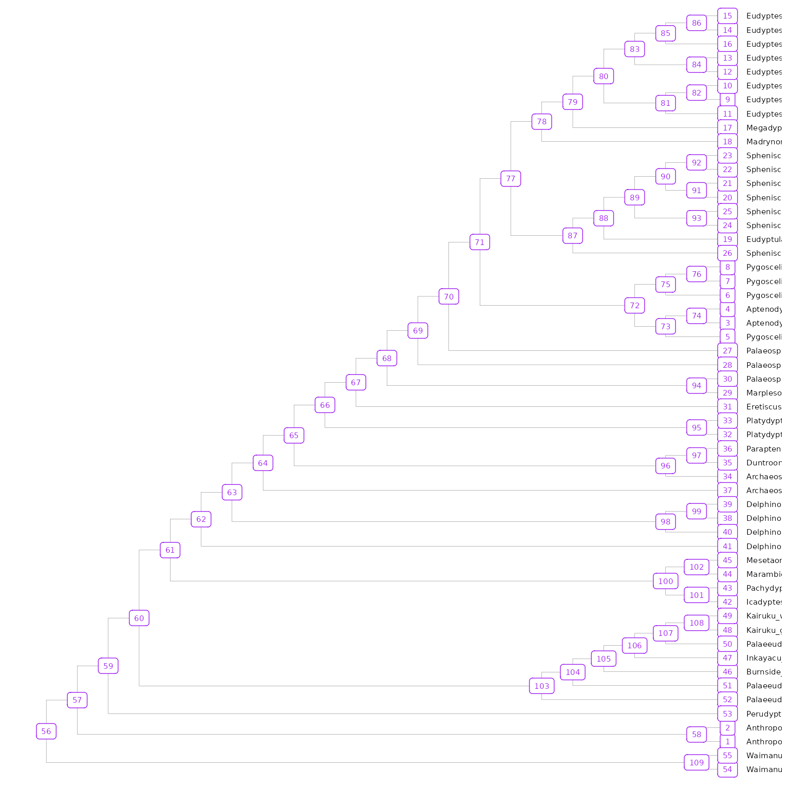
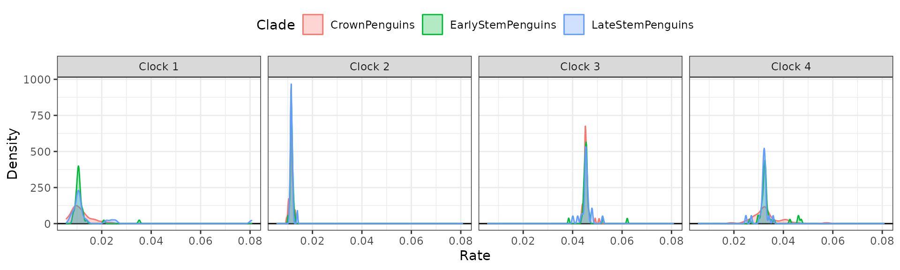
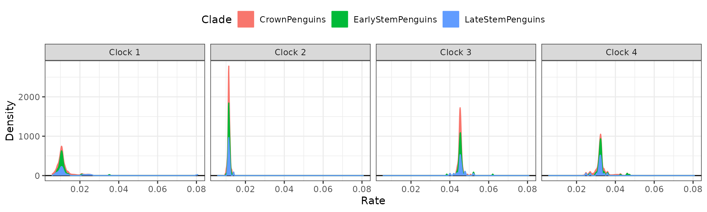
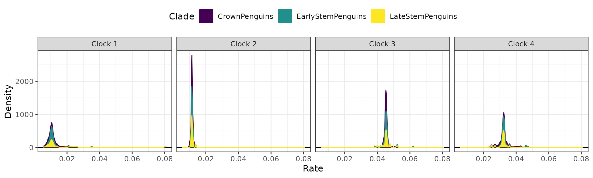
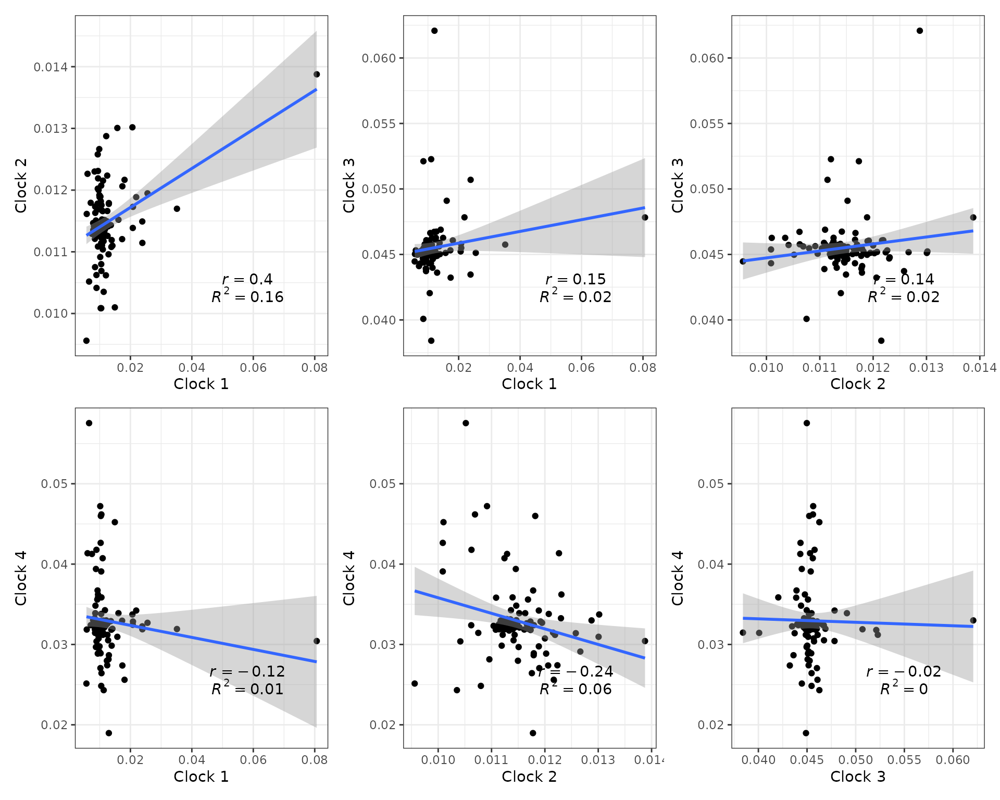
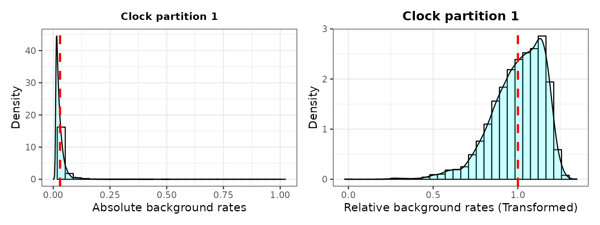
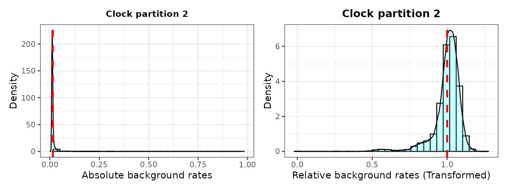
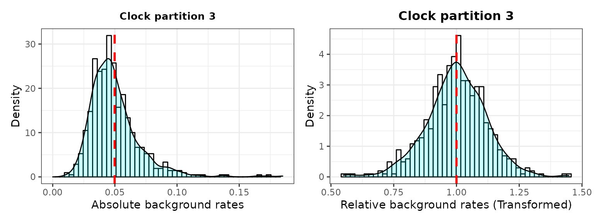
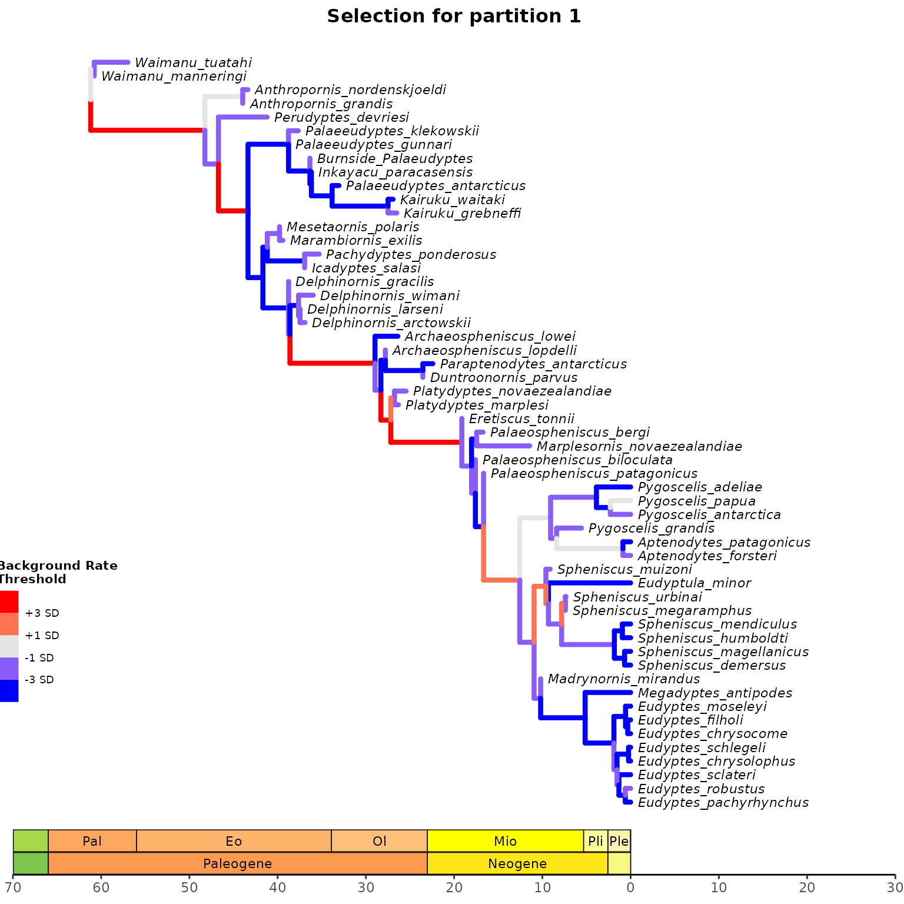
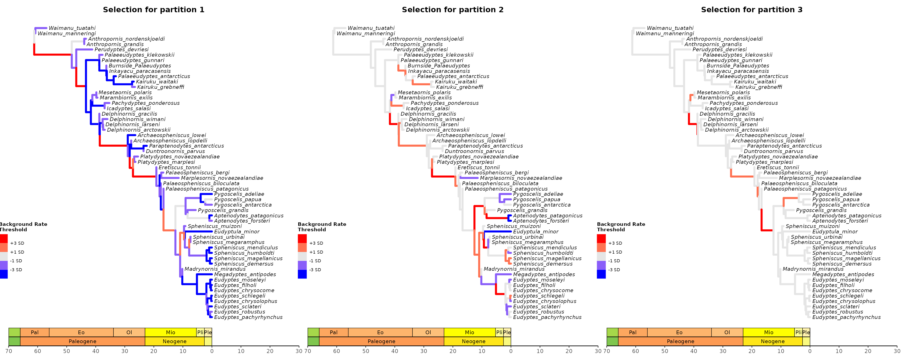

Evolutionary Rates & Selection Mode (BEAST2)
2022-11-03
Source:vignettes/rates-selection_BEAST2.Rmd
rates-selection_BEAST2.RmdThis vignette explains how to extract evolutionary rate parameters estimated from relaxed clock Bayesian inference analyses produced by BEAST2. It also shows how to use evolutionary rate based inference of selection mode (strength) adapted to clock-based rates, as introduced by Simões and Pierce (2021). See the sister vignette “Evolutionary Rates & Selection Mode (BEAST2)” for an equivalent workflow using output data produced by Mr. Bayes.
Load the EvoPhylo package
Evolutionary Rates Statistics and Plots
In this section, we will extract evolutionary rate parameters from each node from a Bayesian clock (time-calibrated) summary tree. The functions below will store them in a data frame, produce summary statistics tables, and create different plots showing how rates are distributed across morphological partitions and clades. Note that step 0 needs to be performed before running the inference when using BEAST2.
0. Set your BEAST2 analysis to log multiple clocks
This step is specific to BEAST2 analyses - if using Mr. Bayes, skip directly to step 1.
When using a default configuration generated through BEAUti, only one of the clocks will be logged along the tree. For the other clocks, only summary statistics (such as the mean rate) will be logged. In order to obtain the clock rates for different partitions, we need to modify the setup before running the inference.
In order to do this, open the BEAST2 XML configuration file and find the section which logs the tree, which should look similar to this:
<logger id="treelog.t:26" spec="Logger" fileName="multiclock.trees" logEvery="10" mode="tree">
<log id="TreeWithMetaDataLogger.t:26" spec="beast.evolution.tree.TreeWithMetaDataLogger" branchratemodel="@RelaxedClock.c:26" tree="@Tree.t:26"/>
</logger>This section needs to be duplicated for each additional clock, modifying the name of the clock (branchratemodel), the file name (fileName) and the name of the logger (id) like in this example:
<logger id="treelog.t:26.2" spec="Logger" fileName="multiclock.clock2.trees" logEvery="10" mode="tree">
<log id="TreeWithMetaDataLogger.t:26" spec="beast.evolution.tree.TreeWithMetaDataLogger" branchratemodel="@ExponentialRelaxedClock.c:261" tree="@Tree.t:26"/>
</logger>The clock name needs to reference the name (id) of one of the clock models set up in the analysis, which can be found earlier in the XML file.
1. Get rates from the clock tree and create a rate table
Here we assume that a consensus or summary tree has been generated for each of the tree log files generated by the inference configured in step 0, for instance by using the software TreeAnnotator. First, import these summary clock trees using treeio’s function read.beast().
## Import all clock summary trees (.tre, .t, or .tree) produced by BEAST2 from your local directory
tree_clock1 <- treeio::read.beast("tree_clock1.tre")
tree_clock2 <- treeio::read.beast("tree_clock2.tre")
#etcBelow, we use the example BEAST2 clock trees from 3 morphological partitions and one molecular clock partition that accompany EvoPhylo.
tree_clock1 <- system.file("extdata", "Penguins_MCC_morpho_part1.t", package = "EvoPhylo")
tree_clock2 <- system.file("extdata", "Penguins_MCC_morpho_part2.t", package = "EvoPhylo")
tree_clock3 <- system.file("extdata", "Penguins_MCC_morpho_part3.t", package = "EvoPhylo")
tree_clock4 <- system.file("extdata", "Penguins_MCC_dna.t", package = "EvoPhylo")
tree_clock1 <- treeio::read.beast(tree_clock1)
tree_clock2 <- treeio::read.beast(tree_clock2)
tree_clock3 <- treeio::read.beast(tree_clock3)
tree_clock4 <- treeio::read.beast(tree_clock4)Subsequently, using get_clockrate_table_BEAST2(), users can extract mean or median rate values for each node in the summary tree. These mean or median rate values are calculated by TreeAnnotator taking into account all trees from the posterior sample. Please note that analyses must have reached the stationarity phase and independent runs converging for the summary statistics in each node to be meaningful summaries of the posterior sample.
The example shown here uses two different clocks, however the function supports any number of clocks which can all be passed as separate arguments.
## Get table of clock rates with summary stats for each node in
## the tree for each relaxed clock partition (4 partitions in this dataset)
RateTable_Medians_4p <- get_clockrate_table_BEAST2(tree_clock1, tree_clock2, tree_clock3, tree_clock4, summary = "median")
RateTable_Means_4p <- get_clockrate_table_BEAST2(tree_clock1, tree_clock2, tree_clock3, tree_clock4, summary = "mean")
2. Export the rate table and plot tree with node values
Once a rate table has been obtained from BEAST2 files, it is necessary to export it. This is a necessary step to subsequently open the rate table spreadsheet locally (e.g., using Microsoft Office Excel) and customize the table with clade names associated with with each node in the tree for downstream analyses. Note that the root node may include “NA” for rate value, so it must be removed from the rate table.
Plot tree node labels to customize clade names
To visualize the node values in the tree, you can use ggtree(). This can be done on any of the imported trees, as all BEAST2 Summary trees should have the same topology and divergence times, differing only on rate parameters.
## Plot tree node labels
library(ggtree)
tree_nodes <- ggtree(tree_clock1, branch.length = "none", size = 0.05) +
geom_tiplab(size = 2, linesize = 0.01, color = "black", offset = 0.5) +
geom_label(aes(label = node), size = 2, color="purple")
tree_nodes
## Save your plot to your working directory as a PDF
ggplot2::ggsave("Tree_nodes.pdf", width = 10, height = 10)
3. Import rate table with custom clade memberships
A new “clade” column has been added to the rates table. Below, we use the rate table with clade membership RateTable_Means_4p_Clades that accompanies EvoPhylo (clade names in this example are for demonstration purposes only).
## Import rate table with clade membership (new "clade" column added)
## from your local directory
RateTable_Medians_Clades <- system.file("extdata", "RateTable_Medians_Clades.csv", package = "EvoPhylo")
RateTable_Medians_Clades <- read.csv(RateTable_Medians_Clades, header = TRUE)
head(RateTable_Medians_Clades, 5)
## clade nodes rates1 rates2 rates3 rates4
## 1 EarlyStemPenguins 1 0.01059049 0.01142373 0.04521063 0.03214791
## 2 EarlyStemPenguins 2 0.01127067 0.01117188 0.04558499 0.03297338
## 3 EarlyStemPenguins 58 0.01252320 0.01143236 0.04487146 0.03119615
## 4 CrownPenguins 3 0.01493279 0.01009941 0.04626338 0.04521892
## 5 CrownPenguins 4 0.01050220 0.01008585 0.04537996 0.03908424
4. Get summary stats for each clade/clock partition
Obtain summary statistics table and plots for each clade by clock partition using clockrate_summary(). Supplying a file path to file save the output to that file.
## Get summary statistics table for each clade by clock
clockrate_summary(RateTable_Medians_Clades,
file = "Sum_RateTable_Medians_4p.csv")| clade | clock | n | mean | sd | min | Q1 | median | Q3 | max |
|---|---|---|---|---|---|---|---|---|---|
| CrownPenguins | 1 | 47 | 0.012 | 0.004 | 0.006 | 0.009 | 0.011 | 0.013 | 0.024 |
| EarlyStemPenguins | 1 | 39 | 0.011 | 0.004 | 0.008 | 0.010 | 0.011 | 0.011 | 0.035 |
| LateStemPenguins | 1 | 22 | 0.015 | 0.015 | 0.007 | 0.010 | 0.011 | 0.012 | 0.081 |
| CrownPenguins | 2 | 47 | 0.011 | 0.001 | 0.010 | 0.011 | 0.011 | 0.012 | 0.013 |
| EarlyStemPenguins | 2 | 39 | 0.012 | 0.001 | 0.010 | 0.011 | 0.011 | 0.012 | 0.013 |
| LateStemPenguins | 2 | 22 | 0.012 | 0.001 | 0.011 | 0.011 | 0.011 | 0.012 | 0.014 |
| CrownPenguins | 3 | 47 | 0.045 | 0.001 | 0.043 | 0.045 | 0.045 | 0.046 | 0.051 |
| EarlyStemPenguins | 3 | 39 | 0.046 | 0.003 | 0.038 | 0.045 | 0.045 | 0.046 | 0.062 |
| LateStemPenguins | 3 | 22 | 0.045 | 0.002 | 0.040 | 0.045 | 0.045 | 0.046 | 0.052 |
| CrownPenguins | 4 | 47 | 0.033 | 0.006 | 0.019 | 0.029 | 0.032 | 0.034 | 0.058 |
| EarlyStemPenguins | 4 | 39 | 0.034 | 0.004 | 0.026 | 0.032 | 0.033 | 0.033 | 0.047 |
| LateStemPenguins | 4 | 22 | 0.032 | 0.002 | 0.025 | 0.032 | 0.032 | 0.033 | 0.036 |
5. Plot rates by clock partition and clade
Plot distributions of rates by clock partition and clade with clockrate_dens_plot().
## Overlapping plots
clockrate_dens_plot(RateTable_Medians_Clades, stack = FALSE,
nrow = 1, scales = "fixed")
Sometimes using stacked plots provides a better visualization as it avoids overlapping distributions.
## Stacked plots
clockrate_dens_plot(RateTable_Medians_Clades, stack = TRUE,
nrow = 1, scales = "fixed")
It is also possible to append extra layers using ggplot2 function, such as for changing the color scale. Below, we change the color scale to be the Viridis scale.
## Stacked plots with viridis color scale
clockrate_dens_plot(RateTable_Medians_Clades, stack = TRUE,
nrow = 1, scales = "fixed") +
ggplot2::scale_color_viridis_d() +
ggplot2::scale_fill_viridis_d()
6. Rate linear models
We can also plot linear model regressions between rates from two or more clocks with clockrate_reg_plot().
## Plot regressions of rates from multiple clocks
#Morpho-morpho rates
p1<- clockrate_reg_plot(RateTable_Medians_Clades, clock_x = 1, clock_y = 2)
p2<- clockrate_reg_plot(RateTable_Medians_Clades, clock_x = 1, clock_y = 3)
p3<- clockrate_reg_plot(RateTable_Medians_Clades, clock_x = 2, clock_y = 3)
#Morpho-Mol rates
p4<- clockrate_reg_plot(RateTable_Medians_Clades, clock_x = 1, clock_y = 4)
p5<- clockrate_reg_plot(RateTable_Medians_Clades, clock_x = 2, clock_y = 4)
p6<- clockrate_reg_plot(RateTable_Medians_Clades, clock_x = 3, clock_y = 4)
library(patchwork) #for combining plots
p1 + p2 + p3 + p4 + p5 + p6 + plot_layout(nrow = 2)
## Save your plot to your working directory as a PDF
ggplot2::ggsave("Plot_regs.pdf", width = 8, height = 8)
Selection Mode
In this section, we will use evolutionary rate based inference of selection mode, as first introduced by Baker et al. (2016) for continuous traits, and later adapted to clock-based rates by Simões and Pierce (2021).
Although the dataset used in the example here includes both morphological and molecular partitions, we will focus the selection mode inference using morphological partitions only. There are multiple available methods to infer the strength of selection using molecular data (e.g., dn/ds ratio) that are better suited to the intrinsic properties of molecular data, or which take into account additional variables available for extant taxa (generation times), and we refer users to those approaches.
1. Import posterior log file
The combined posterior log file from BEAST2 is outputted by LogCombiner from their software package. Our own function to combined log files combine_log is intended to work with Mr. Bayes posterior files only.
When using more two or more clock partitions, posterior log files from BEAST2 will have the mean evolutionary rates for each partition labeled as “rateEvophylo, users must ensure that all clock partitions that wish to be analyzed should include the word “part” just before the partition number in this label, as outputted by the Evophylo’s function write_partitioned_alignments. So, this label should read “ratewrite_partitioned_alignments as a Nexus file labeled “KairukuEA2015_Morpho_3p_part1”, and so the mean evolutionary rates for the first partition is labeled “rate.KairukuEA2015_Morpho_3p_part1.mean”.
Below, we use the posterior dataset “Penguins_log.log” that accompanies EvoPhylo.
posterior <- system.file("extdata", "Penguins_log.log", package = "EvoPhylo")
posterior <- read.table(posterior, header = TRUE)
## Show first 10 lines of combined log file
head(posterior, 10)
###2. Check background rates distribution and if they need transformation
The output includes histograms showing the data distribution before and after data transformation for comparisons.

3. Plot selection gradient on the summary tree
Using different thresholds, Identify the selection mode across branches in the tree for each clock partition with plot_treerates_sgn().
Users must indicate the type of output file (between Mr. Bayes and BEAST2) and whether they would like to log transform the background rate to meet assumptions of normally distributed data, based on the results obtained from plot_back_rates. Users should also indicate in “clock” the number of the clock partition they would like to plot rates from and the desired significance threshold to interpret branch rates (we recommend number of standard deviations around the mean of background rates).Finally, a series of arguments enable users to customize the geological timescale to add to the tree.
## Plot tree using various thresholds for clock partition 1
A1<-plot_treerates_sgn(
type = "BEAST2", trans = "log10", #Indicates software name output and type of transformation
tree_clock1, posterior, #Calls tree for clock partition 1 and posterior log file
clock = 1, #Use background rates for clock partition 1
threshold = c("1 SD", "3 SD"), #sets threshold for selection mode
branch_size = 1.5, tip_size = 3, #sets size for tree elements
xlim = c(-70, 30), nbreaks = 8, geo_size = list(3, 3)) #sets limits and breaks for geoscale
A1
Plot tree using various thresholds for the other clock partitions and combine them.
## Plot tree using various thresholds for other clock partition and combine them
A2<-plot_treerates_sgn(
type = "BEAST2", trans = "log10", #Indicates software name output and type of transformation
tree_clock2, posterior, #Calls tree for clock partition 2 and posterior log file
clock = 2, #Use background rates for clock partition 3
threshold = c("1 SD", "3 SD"), #sets threshold for selection mode
branch_size = 1.5, tip_size = 3, #sets size for tree elements
xlim = c(-70, 30), nbreaks = 8, geo_size = list(3, 3)) #sets limits and breaks for geoscale
A3<-plot_treerates_sgn(
type = "BEAST2", trans = "log10", #Indicates software name output and type of transformation
tree_clock3, posterior, #Calls tree for clock partition 3 and posterior log file
clock = 3, #Use background rates for clock partition 3
threshold = c("1 SD", "3 SD"), #sets threshold for selection mode
branch_size = 1.5, tip_size = 3, #sets size for tree elements
xlim = c(-70, 30), nbreaks = 8, geo_size = list(3, 3)) #sets limits and breaks for geoscale
library(patchwork)
A1 + A2 + A3 + plot_layout(nrow = 1)
## Save your plot to your working directory as a PDF
ggplot2::ggsave("Tree_Sel_Morpho_3p.pdf", width = 18, height = 8)
4. Pairwise t-tests of rate values among clades
The function get_pwt_rates_BEAST2() complements the functionality of plot_treerates_sgn by producing a table of pairwise t-tests for differences between the mean background rate in the posterior and the absolute rate for each summary tree branches Should be used only for normally distributed data in which a CI=0.95 is considered a good threshold. In many cases, however, using multiple standard deviations as outputted using plot_treerates_sgn provides a more robust test of whether branch rates are significantly different from background rates.
4.1. Import rate table with clade membership (new “clade” column added) from your local directory with “mean” values
Below, we use the rate table with clade membership “RateTable_Means_Clades.csv” that accompanies EvoPhylo.
## Import rate table with clade membership (new "clade" column added)
## from your local directory with "mean" values
RateTable_Means_Clades <- system.file("extdata", "RateTable_Means_Clades.csv", package = "EvoPhylo")
RateTable_Means_Clades <- read.csv(RateTable_Means_Clades, header = TRUE)
head(RateTable_Means_Clades, 5)
## clade nodes rates1 rates2 rates3 rates4
## 1 EarlyStemPenguins 1 0.01680336 0.01217294 0.04894430 0.03657966
## 2 EarlyStemPenguins 2 0.01782966 0.01181350 0.04985747 0.03746188
## 3 EarlyStemPenguins 58 0.02404947 0.01263853 0.04995735 0.03741211
## 4 CrownPenguins 3 0.01913400 0.01017825 0.05145375 0.04892464
## 5 CrownPenguins 4 0.01319288 0.01016964 0.04996688 0.043256694.2. Get and export table of pairwise t-tests
## Get table of pairwise t-tests for difference between the posterior
## mean and the rate for each tree node
RateSign_Tests <- get_pwt_rates_BEAST2(RateTable_Means_Clades, posterior)| clade | node | clock | background.rate.mean | absolute.rate.mean | relative.rate.mean | p.value |
|---|---|---|---|---|---|---|
| EarlyStemPenguins | 43 | 1 | 0.0260902 | 0.0156937 | 0.6015154 | 0e+00 |
| LateStemPenguins | 65 | 1 | 0.0260902 | 0.0215020 | 0.8241390 | 0e+00 |
| LateStemPenguins | 37 | 1 | 0.0260902 | 0.0153367 | 0.5878329 | 0e+00 |
| LateStemPenguins | 64 | 1 | 0.0260902 | 0.0450708 | 1.7274962 | 0e+00 |
| EarlyStemPenguins | 38 | 1 | 0.0260902 | 0.0175102 | 0.6711403 | 0e+00 |
| EarlyStemPenguins | 39 | 1 | 0.0260902 | 0.0161433 | 0.6187486 | 0e+00 |
| EarlyStemPenguins | 99 | 1 | 0.0260902 | 0.0189790 | 0.7274382 | 0e+00 |
| EarlyStemPenguins | 40 | 1 | 0.0260902 | 0.0178498 | 0.6841549 | 0e+00 |
| EarlyStemPenguins | 98 | 1 | 0.0260902 | 0.0130211 | 0.4990813 | 0e+00 |
| EarlyStemPenguins | 63 | 1 | 0.0260902 | 0.0223161 | 0.8553429 | 5e-07 |
## Export the table
write.csv(RateSign_Tests, file = "RateSign_Tests.csv")
References
Baker, Joanna, Andrew Meade, Mark Pagel, and Chris Venditti. 2016. “Positive Phenotypic Selection Inferred from Phylogenies.” Biological Journal of the Linnean Society 118 (1): 95–115.
Simões, Tiago R., and Stephanie E. Pierce. 2021. “Sustained High Rates of Morphological Evolution During the Rise of Tetrapods.” Nature Ecology & Evolution 5 (10): 1403–14. https://doi.org/10.1038/s41559-021-01532-x.